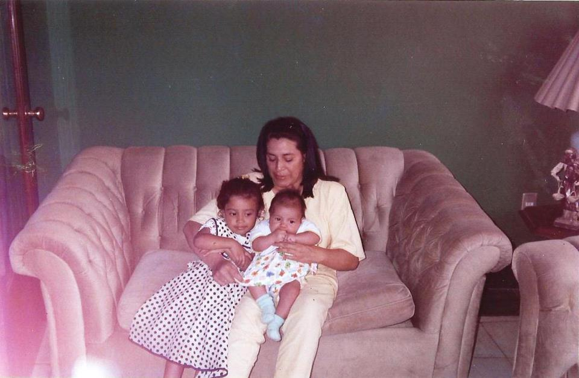

Mi Pagina Web
Mariana Gómez Islas mi autobiografía
Nací en los Ángeles California el primero de abril de 1995,
soy hija de Griselda Islas Cabrera una psicóloga educativa e hija de Raúl Gómez,
después de un tiempo de estar viviendo en EUA mi mamá y yo regresamos a México
a un pueblo llamado Xicotepec que se encuenta en la sierra norte del estado de puebla.
Mi familia actualmente esta conformada por mi mamá Griselda y mi hermana Melissa.

Fui a la escuela primaría "Emperador Cuauhtémoc" después y a la secundaría federal "Francisco Gónzales Bocanegra"
Actualmente me encuentro estudiando en la benemérita universidad autónoma de Puebla en la facultad de computación una ing.
En tecnologías de la información.
Unos de mis mayores gustos son los animáles y estar al aire libre.
Me considero una persona amigable y tímida y me gusta ayudar a los demás.